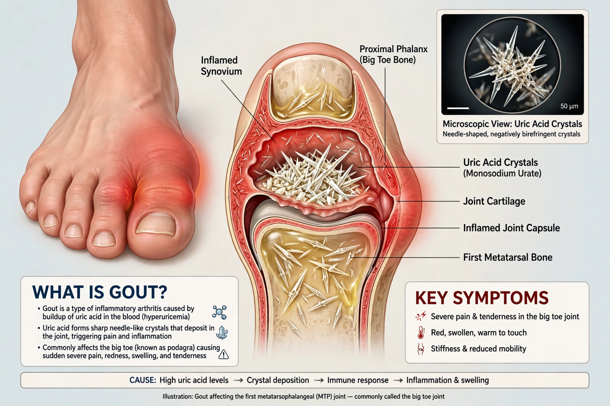

| Gout | |
|---|---|
 | |
| Specialty | Rheumatology |
| Symptoms | Sudden severe joint pain, redness, swelling — often big toe |
| Cause | Monosodium urate crystal deposition from hyperuricemia |
Gout is a form of inflammatory arthritis characterised by recurrent attacks of a red, tender, hot, and swollen joint, caused by deposition of monosodium urate crystals. Pain typically comes on rapidly, often overnight, and most commonly affects the first metatarsophalangeal joint at the base of the big toe (podagra).
Hyperuricemia — elevated blood uric acid from purine metabolism — is the underlying cause, driven by genetics, diet rich in meat, seafood, alcohol and fructose, obesity, and impaired renal excretion. Crystals in the synovial cavity trigger intense neutrophilic inflammation.
Definitive diagnosis is identification of needle-shaped, negatively birefringent crystals in aspirated fluid. Acute attacks are treated with NSAIDs, colchicine, or glucocorticoids. Long-term urate-lowering therapy with allopurinol (first-line) or febuxostat prevents recurrence; chronic disease can produce tophi and joint damage.
Known since antiquity and historically called "the disease of kings", gout was described by Hippocrates and long associated with rich diet.